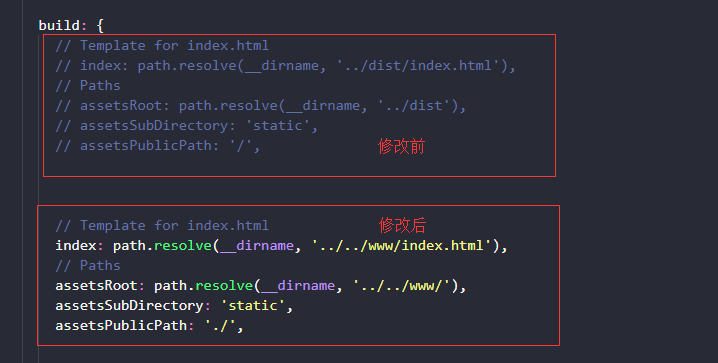
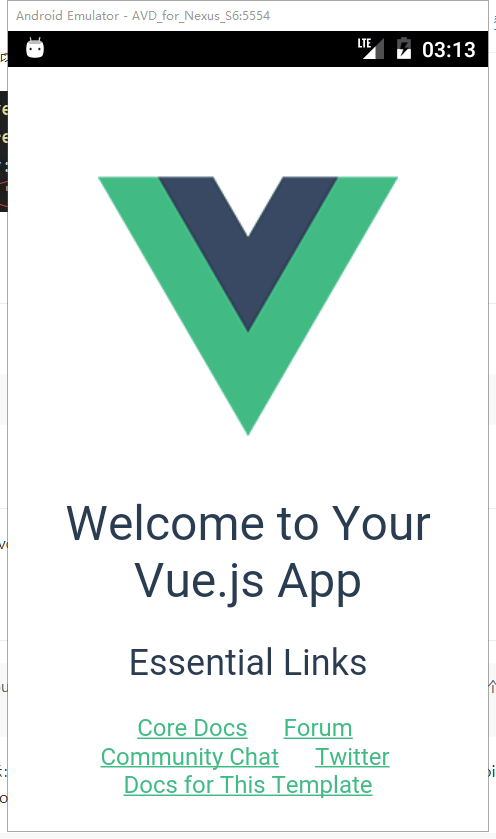

cordova + vue-cli 开发单页混合应用
请确保你当前已经配置好cordova开发环境和vue开发环境
1. cmd 命令行运行安装 vue-cli && 查看 vue 是否安装成功
$ npm install -g @vue/cli
$ vue --version
2. 创建 && 运行 cordova项目
到指定目录下创建
$ cordova create projectName切入项目目录
$ cd projectName添加平台(android)
$ cordova platform add android --save检查你当前平台设置状况:
$ cordova platform ls检测你是否满足构建平台的要求:
$ cordova requirements // 下面为结果示例 Requirements check results for android: Java JDK: installed . Android SDK: installed Android target: installed android-19,android-21,android-22,android-23,Google Inc.:Google APIs:19,Google Inc.:Google APIs (x86 System Image):19,Google Inc.:Google APIs:23 Gradle: installed Requirements check results for ios: Apple OS X: not installed Cordova tooling for iOS requires Apple OS X Error: Some of requirements check failed运行调试(先保证cordova项目没问题，再进行增加vue-cli)
$ cordova run android
3. 在 projectName 项目下添加 vue项目；
- 利用
vue-cli快速构建项目
$ vue init webpack appName
- 切换到 appName 项目运行指令，检测vue项目是否搭建成功
$ cd .\app\
$ npm i
$ npm run dev
// 浏览器打开 http://localhost:8080 （默认）
4. 整合 cordova 与 vue-cli ;
打开vue项目下的config/index.js文件，修改打包目标目录

修改 vue 项目下的index.html文件，添加script
<script src="cordova.js"></script>将vue打包 && 运行cordova到模拟器
ps : 只需在vue项目目录下执行即可，无需切换目录
$ npm run build $ cordova run android运行成功！

自定义脚本命令
更改vue下的package.json ， 添加自定义命令，如下：
"scripts": { ... "android": "npm run build && cordova run android" }- 这样就不用二次输入，可以执行
npm run android，实现打包完 vue 后再运行到 android；
- 这样就不用二次输入，可以执行
只要不涉及到 cordova 插件或者 cordova api，就可以开启 npm run dev 在浏览器里面进行开发调试